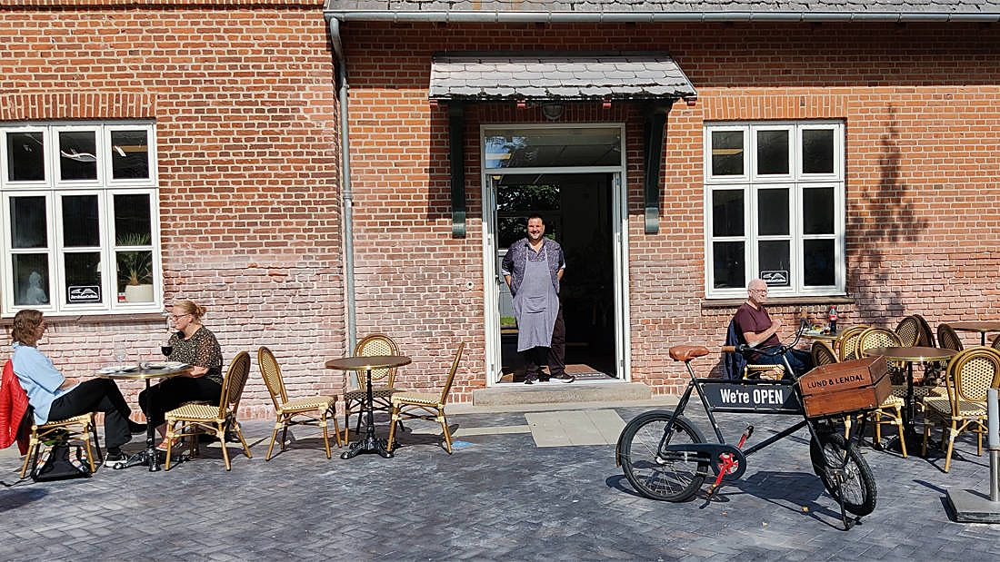
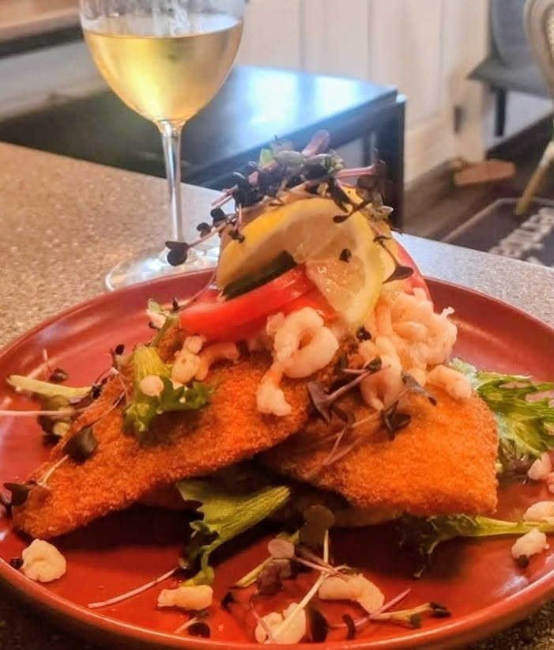
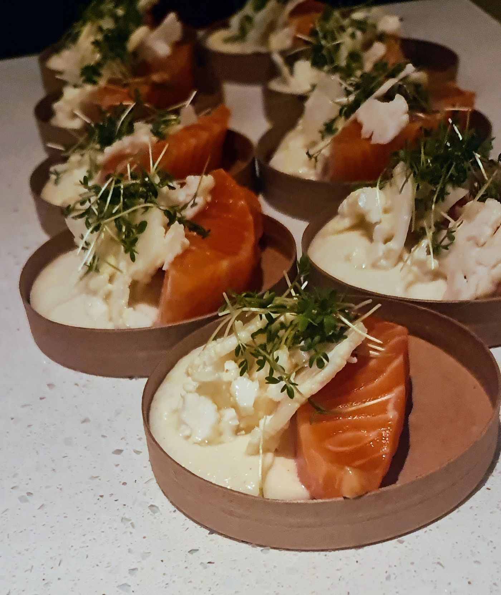

Kro-mad & thai · Stationsbygningen fra 1877 · Lille Torv 3, Ikast
Jernbanecaféen

Torsdag–lørdag
12–20
Søndag
12–19
Onsdag
16–20
Mandag & tirsdag
Lukket
I dag Torsdag 28. august
Græsk kylling med tzatziki og kartofler
135,- Spis her, eller ring og tag den med: 30 80 72 41
Dagens ret skifter løbende. Følg med her eller på Facebook

Kro-maden er ikke nostalgi.
Den er håndværk.
Niels er vokset op på en kro og uddannet kok med fortid på Le Canard og Norsminde Kro. Så når der står stjerneskud og pariserbøf på kortet, er det fordi han kan dem, ikke fordi de skal fylde.
Hele menukortet Alt på kortet kan tages med

Stjerneskuddet, husets klassiker
Rapheephons hjemmelavede thai
Ingen færdigretter: Rapheephon står selv for hver eneste ret. Spis i caféen, eller ring og tag med hjem: 30 80 72 41.

Phad hmu krob, lynstegt sprødt grisebryst

Stationen, der blev et spisested
Ikast Station er fra 1877, bygget til strækningen mellem Silkeborg og Herning. I dag står bygningen stort set som dengang, med togbanen på den ene side og Lille Torv på den anden.
Niels overtog caféen i 2023 og står for køkkenet. Rapheephon tager imod gæsterne og står bag det thai, der er blevet fast inventar.
Bord eller takeaway?
Eller kom bare forbi. Vi finder en plads.
Selskaber og private dining
Skal Niels lave maden hos jer?
Til selskaber, private dining og catering kommer Niels ud til jer. Det foregår gennem Lej en Kok, hans andet køkken.

Kom forbi
Ingen reservation nødvendig
Du er velkommen til bare at komme. Vil du være sikker på plads til et større selskab, kan du skrive til os.
Lille Torv 37430 Ikast
30 80 72 41
info@jbcafeen.dk